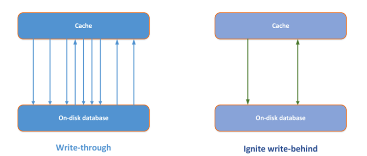
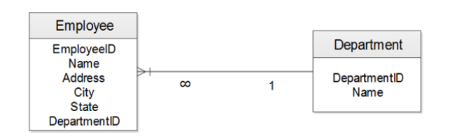
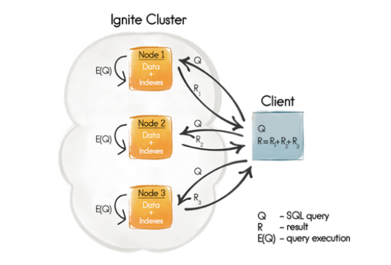
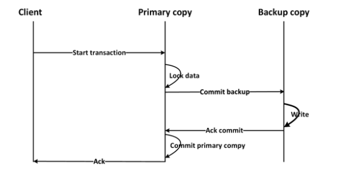
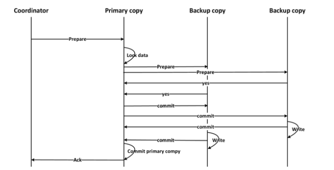

Persistence
- Ignite реализует интерфейсы CacheLoader и CacheWriter из спецификации JCache.

- Частые обновления кеша могут привести к большим нагрузкам в persistence storage для решения этой проблемы хорошо подходит write-behind кеш - который аккумилирует обновления и затем отправляет их в бд. 
- Критерии, приводящие обновлению данный в write-behind mode:
- Временные - вышло максимальное время нахождения объекта в очереди на запись
- Размерные - очередь записывается на диск по достижению опр размера
- Комбинаия 1 и 2то
- при сипользовании write-behind только последнее обновление одного и того же ключа попадет в persistence-хранилище.
Persistence with postgres
- см пример postgesExample
Cache queries
-
Типы запросов:
- SqlQuery - sql запрос
- TextQuery - позволяет искать сущности по тексту
- QueryCursor - позволяет итерировать по страницам,не потоково безопасен и должен закрываться полсле использования.
- ScanQuery - возвразает результат по предикату (предикат - это выражение возвращающее true\false)
- IgniteBiPredicate - это функциональый интерфейс принимающий на вход ключ и значение - возвращает boolean - будет ли выбрана эта запись. Используется в ScanQuery. (см C4CacheQueries)
Текстовые запросы
(см С4SqlQueries)
- Ignite использует Lucene для текстовых запросов.
- Документ в Lucene это экземпляр для индексации и поиска, сущность БД - это документ для Lucine.
- Lucene использует инвертированный индекс - страница состоит из слов - а Lucene
привязывает слова к страницам.

- Чтобы включить поле в lucene-индекс его надо аннотировать @QueryTextField. Можно аннотировать не сами поля а get-методы.
SQL-запросы
(см C4SqlQueries)
- Выполнение Joins представляет собой нетривиальную задачу, достоверные ответы могут быть получены если данные collocated - то находятся на той же ноде что и join-запрос. Replicated cache лишен этого недостатка - тк все данные хранятся на всех нодах.
- Для иллюстрации джоинов будет использовано простое отношение 
- Для использования SQL-запросов поля сущности аннотируется через @QuerySqlField либо сама сущность через @Queryentity.
- Для каждой сущности SqL есть 2 предопределенных поля _key и _val - это ключ и значение в игнайт кеше. И можно выполнять запросы вида:
SELECT * FROM Employee WHERE _key = 100
- Создание индеса по полю @QuerySqlField(index=true)
- Пример создания запроса, SqlQuery всегда возвращает всю сущность:
SqlQuery<EmployeeKey, Employee> empSal = new SqlQuery(Employee.class, "sal>?");
empSal.setArgs(1000);
- SqlFieldsQuery -возвращает не все поля, а только запрошенные. В курсоре будет массив имен:
SqlFieldsQuery empSalName = new SqlFieldsQuery("SELECT e.ename FROM Employee e WHERE sal > ?");
empSalName.setArgs("2000");
Распределеные объединения.
- При использовании Replicated -кеша афинные ключи не нужны.
- Employee и соотв ему Department могут располагаться на разных нодах в Partitioned кеше чтобы избежать этого и хранить их совместно на одной ноду Employee имеет так называемый афинный ключ:
private final int empNo;
@AffinityKeyMapped
private final int deptNo;
При использовании афинного ключа и соотв collocated Join обработка запроса выглядит так: 
- Имя кеша выступает в качетве схемы в Ignite, имя схемы берется а двойные кавычки.
Non-colocated joins
- Если данные необходимые для выполнения джоин-запроса не содержатся в одной ноде, то они будут запрошены из других нод кластера. Для включения такого режима нужно:
SqlQuery.setDistributedJoins(true);
Естественно такой запрос будет выполнятся медленнее из-за доп сетевого траффика.
Афинный ключ в этом случае не требуется.

Истечение времени жизни (Expiration) и удаление элементов (Eviction)
- Expiration ignite содержит множество политик, определяющих срок жизни элемента.
По умолчанию ни одна из политик не активна.

- Класс Duration определяет время жизни елемента
Ignite ignite = Ignition.start(CLIENT_CONFIG);
CacheConfiguration cacheConfiguration = new CacheConfiguration("myCacheConfig");
cacheConfiguration.setExpiryPolicyFactory(CreatedExpiryPolicy.factoryOf(Duration.FIVE_MINUTES));
ignite.getOrCreateCache(cacheConfiguration);
- Eviction - это алгоритм, определяющий какие эелементы нужно удалить если кеш полон. Можно определить Evicion по числу элементов или по размеру памяти кеша.
- LRU policy поддерживает удаление по макс числу елементов и по макс памяти кеша
CacheConfiguration cacheCfg = new CacheConfiguration();
cacheCfg.setName("cacheName");
// Set the maximum cache size to 1 million (default is 100,000).
cacheCfg.setEvictionPolicy(new LruEvictionPolicy(1000000));
IgniteConfiguration cfg = new IgniteConfiguration();
cfg.setCacheConfiguration(cacheCfg);
// Start Ignite node.
Ignition.start(cfg);
- FIFO - first in - first out поддерживает удаление по макс числу елементов и по макс памяти кеша
CacheConfiguration cacheCfg = new CacheConfiguration();
cacheCfg.setName("cacheName");
// Set the maximum cache size to 1 million (default is 100,000).
cacheCfg.setEvictionPolicy(new FifoEvictionPolicy(1000000));
IgniteConfiguration cfg = new IgniteConfiguration();
cfg.setCacheConfiguration(cacheCfg);
// Start Ignite node.
Ignition.start(cfg);
Транзакции
- atomic (поумолчаню комманды выполняются по отдельности), transactional (группой), определяется на уровне кеша. (см C4PostgesExample)
- Ignite транзакии могут охватывать сразу несколько кешей.
- Если в транзакции возникают ошибки - она автоматом откатывается.
- Методы запуска тразакций:
ignite().transactions().txStart();//свойства транзакции берутся из TransactionConfiguration
//TransactionConfiguration - одержит свойства транзакций по умолчанию
txStart(TransactionConcurrency concurrency, TransactionIsolation isolation);
//new transaction with the specified concurrency and isolation.
- TransactionConcurrency= PESSIMISTIC or OPTIMISTIC.
- TransactionIsolation = READ_COMMITTED, REPEATABLE_READ, SERIALIZABLE
- 1-phase commit используется если в кеше не более 2-х Replicated узлов с одной бекап копией 
- 2-phase commit работает если есть несколько backup-копий Клиент инициирует коммит-> primary ноды (они хранят осн копию) получают prepare message -> primary nods налагают блокировки на primary copy-> primay nods шлют prepare message всем копиям-> по получению положительного ответа от всех копий начинаетя запись данных в копии а потом и в осн. копию. 
Optimistic mode
- Блокировки накладываются в начале на осн копии а потом и на бекапы на шаге prepare
- Блокировки не накладываются если пользователь не закоммитил транзакцию
- READ_COMMITTED - операции чтения не накладывают никаких блокировок, прочитав одни и теже данные 2 раза в течении транзакции можно получить разные результаты.Изменяемые данные копятся и записываются только в конце транзакции с использованием блокировок.
- REPEATABLE_READ - чтение не накладывает блокировок но прочитанные данные кешируются, прочитав 2 раза одни и теже данные - всегда получим один и тот же результат
- SERIALIZABLE - если хотябы один элемент транзакции модифицирован до коммита - то выбросим исключение
Pessimistic mode
- Блокровки накладываются при первом доступе к объекту в начале на основные копии а потом и на дополнительные на шаге prepare
- READ_COMMITTED - возможны не повторяемые чтения(блокировок на чтение нет), при записи блокировки накладываются сразу.
- REPEATABLE_READ - блокировки накладываются на чтение и на запись. Данные транзакии кешируются локально и ниодна транзакция не может менять прочитанные или записанные в этой транзакции данные.
- SERIALIZABLE = REPEATABLE_READ
- Backup update mode - синхронный\асинхронный. В асинхронном режиме tx.commit(); не будет дожидаться подтверждения записи от других нод.